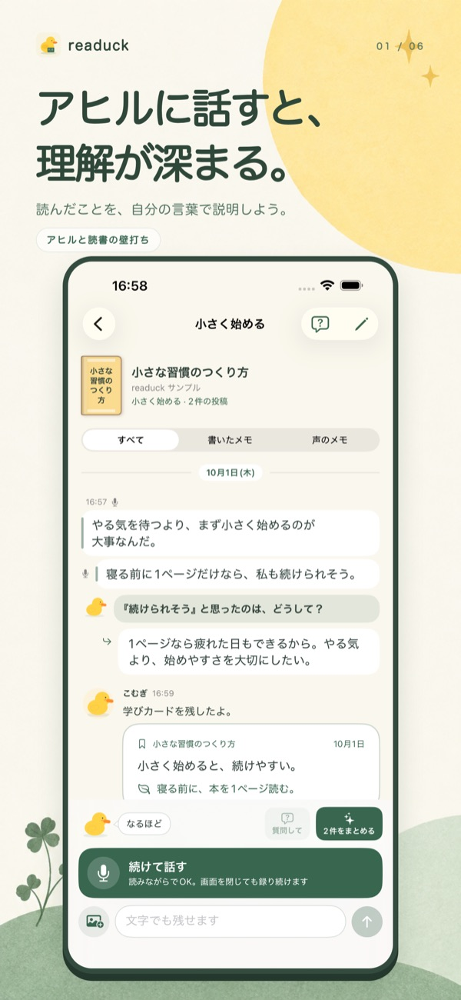
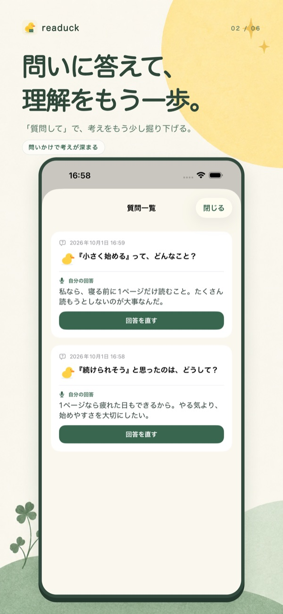
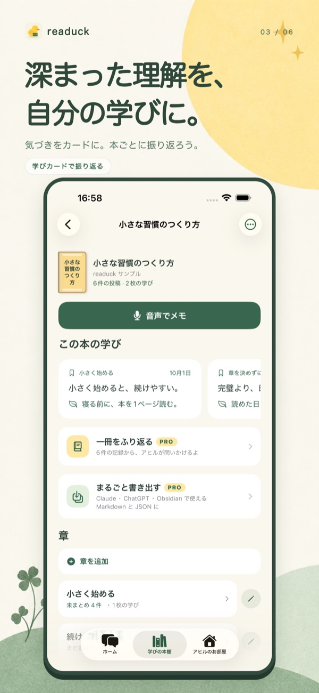

readuck とは
readuck は、本を読んで感じたことや考えたことを、声と文字で残せる読書メモアプリです。アヒルに教えてあげるつもりで、ひとことから話します。もう少し考えたいときはアヒルが問いを一つ返し、たまったメモは AI が「要点・気づき・試してみたいこと」の学びカードにまとめます。
「なるほどと思ったのに、あとで思い出せない」「読書メモを残したいけれど、きれいに書くのは大変」という人のために作りました。発想の元は、アヒルの人形に説明しながら自分で答えに気づく「ラバーダック・デバッグ」です。
できること
- 声でも、文字でも。本・章ごとにメモ
- 印象に残ったこと、試してみたいこと、まだよくわからないこと。話すと端末の音声認識で文字になり、章ごとのスレッドに並びます。書いている間は AI を待ちません。
- アヒルの問いで、もう一歩考える
- 「質問して」を押すと、あなたのメモを引用した問いをアヒルが一つ返します。答えや解説は返さず、考えるのはあなたです。
- 気づきを「学びカード」に
- たまったメモを AI が要点・気づき・試してみたいことに整理します。内容は自分の言葉に直して保存できます。
- あとから、アヒルとたしかめる
- 残した学びについての問いに答え、自分の言葉で説明し直します。採点はせず、説明しにくかったところを次に読むときの入口として残します。
- 表紙の並ぶ本棚
- 国立国会図書館サーチで書名を検索するか、手入力で登録します。紙の本でも電子書籍でも使えます。電子書籍のスクリーンショットは、指で囲んだ部分だけを切り抜いて残せます。
- あなたのアヒルと、あなたのペースで
- アヒルの名前と色を選び、記録を重ねると帽子や部屋の小物が増えます。お休みしても、手に入れたアイテムはなくなりません。



こんな人に
- ビジネス書・実用書を読むけれど、読書メモが続かない人
- 読んだ内容を、誰かに説明するように振り返りたい人
- 紙の本を読みながら、手軽に気づきを残したい人
- Obsidian などのノートに読書の記録を集めたい人（Markdown・JSON で書き出せます）
ほかの読書記録アプリとの違い
読んだ冊数や進捗を管理するアプリ、ハイライトを集めるアプリとは違い、readuck は「自分の言葉で説明すること」を中心にしています。AI は本の本文を見ず、内容を知っているふりをして補足したり、理解を採点したりしません。学びカードの気づきや試してみたいことは、あなたが話した言葉からだけ作ります。
料金
アプリは無料で使えます。
| 無料 | readuck Pro | |
|---|---|---|
| 声・文字のメモ、本棚 | 制限なし | 制限なし |
| AI でまとめる（学びカード） | 月2回 | 月間上限なし |
| アヒルの問い | 月5回 | 月間上限なし |
| 一冊のふり返り | 1冊まで | ○ |
| アヒルと週の振り返り | — | ○ |
| まるごと書き出し（Markdown・JSON） | — | ○ |
readuck Pro は月額・年額のサブスクリプションです。価格は App Store でご確認ください。Pro にも、サービス保護のための1日の上限があります。
プライバシー
音声は端末の音声認識で文字にし、サーバーには送りません。メモ・学びカード・画像は端末に保存されます。AI の機能を使うときだけ、必要な文字をサーバー経由で AI に送ります。詳しくはプライバシーポリシーをご覧ください。
よくある質問
無料で使えますか？
基本無料です。声・文字のメモと本棚は回数の制限なく使えます。AI のまとめは月2回、アヒルの問いは月5回まで無料です。
紙の本でも使えますか？
使えます。本の内容を取り込む必要はなく、書名を検索するか手入力で登録して、自分の言葉でメモを残します。
読み終えていなくても使えますか？
使えます。数ページ・一章読んだところで、章ごとにメモを残せます。
AI が本の内容を補ったり、採点したりしますか？
しません。AI は本の本文を見ていないため、理解の正誤は判定しません。AI の意見を、あなたの気づきとして保存することもありません。
対応している端末と言語は？
iOS 26.2 以降の iPhone と iPad です。現在は日本語のみです。
サポート
不具合、ご要望、データに関するご相談は、アプリの「アヒルのお部屋」にある封筒からお問い合わせください。返信が必要な場合は、フォームにメールアドレスをご入力ください。
アプリを利用できない場合は naya.dev.katsumi@gmail.com までご連絡ください。